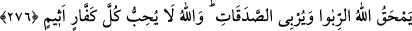

Ebû Hanîfe (r.h.) ve talebelerine göre fâiz, bedelsiz olarak altın, gümüş, buğday,
arpa, hurma ve tuzun birbirleriyle değişmesi sırasında zamana dayalı olarak ölçü ve
tartıda olan fazlalıktır.
Fâiz yiyen kimseler kabirlerinden, kendisine şeytan çarpmış kimse gibi akılları
bozulmuş ve çıldırmış olarak kalkarlar. Bu durum fâiz yiyenlerin alâmeti olur ve
insanlar onları bu alâmetle tanırlar.
Denilmiştir ki insanlar, kabirlerinden kalkarak bir grup halinde beraberce mahşer
yerine giderler. Ancak fâiz yiyenler hâriç. Onlar yürürken sar’aya tutulmuş gibi düşüp
kalkarlar. Çünkü Allah, bunların yiyip midelerine indirdikleri fâizi çoğaltmış ve
yürüyerek tâkatları kalmayıncaya kadar bunu ağırlaştırmıştır.
Bunların bu şekilde kalkışları, her ikisi de kazanç sağladığı için fâiz ile ticâreti aynı
saymaları ve harâm olan fâizi helâl telakkî etmelerinden ötürüdür. Bunlar: “Kıymeti bir
dirhem olan bir malı iki dirheme satmak câiz olduğu gibi, bir dirhemi de iki dirheme
satmak câizdir” demekteydiler.
Alış verişin “asl” olması hasebiyle: “Faiz, alış-veriş gibidir” demek gerekirken,
bunlar fâizi helal saymaktan başka ayrıca onu “asl” kabûl ettikleri için. “Alış-veriş de
fâiz gibidir” demişlerdir. Bir başka ifâdeye göre: “Alış-veriş de fâiz gibidir. İkisinde
de malın ziyâdeleşmesi söz konusudur. O halde fâiz niçin helâl olmasın?” demek
istiyorlardı.
Câhiliyye döneminde borç alan kişi, vaktinde borcunu ödeyemeyeceği takdîrde,
alacaklıdan, borcunun artırılması şartıyla verilen sürenin uzatılmasını isterdi. Onlar
böyle yapar ve “sürenin uzatılması ile alınan kâr, alış-verişte elde edilen kâr
gibidir,” derlerdi. Allah Teâlâ onları yalanlayıp “Allah alış-verişi helâl, fâizi haram
kılmıştır.” buyurdu. Bu ikisi nasıl aynı olur? Çünkü alış-veriş Allah’ın helâl kılmasıyla
helâl olmuş, fâiz ise Allah’ın haram kılmasıyla haram olmuştur.
Kime fâizin Allah tarafından yasaklandığı bildirilir, o da gecikmeksizin bu yasağa
uyarsa geçmişte fâiz sebebiyle işlediği günahlar affedilir. Aldığı fâiz de kendisinde
kalır. Çünkü o bunu, haram olduğu bildirilmeden önce almış ve mülk edinmiştir. Artık o
geri alınmaz. Sahîh bir niyet ile yasağa uyduğu için Allah onu gerektiği şekilde
mükâfâtlandırır. Bir başka tefsîre göre kıyâmet günü onun hakkındaki hüküm Allah’a
âiddir. Size düşen hiçbir şey yoktur. Onun yakasını bırakınız.
Kim de daha önce helâl saydığı gibi bundan sonra fâizi helâl sayarsa işte bunlar
cehenneme girecekler ve orada ebedî olarak kalacaklardır.
276. Allah faizi tüketir (Faiz karışan malın bereketini giderir), sadakaları ise
bereketlendirir. Allah küfürde ve günahta ısrar eden hiç kimseyi sevmez.